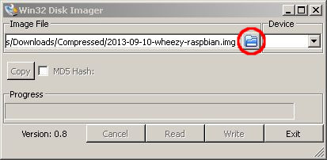

How to set up your Raspberry Pi for the first time¶
Following our philosophy of reuse, tutorial about how to burn SD cards and guide on how to configure the Raspberry Pi is a reuse of two articles Kristophorus Hadiono.
Summary
Download and install the Linux image¶
Raspberry Pi uses an SD card as backing storage for an operating system and other tools. In this tutorial, I will describe how to write a Raspberry Pi image to an SD card.
Raspberry Pi images¶
There are several flavors of raw Raspberry Pi images (e.g., Raspbian, Pidora, Risc OS, RaspBMC, Arch, and OpenElec) which you can download from Raspberry Pi’s official site. All these images are compatible with both model A and B. We recommend to use Raspbian image which based on Debian.

|
Image | 2013-09-25-wheezy-raspbian.zip |
| SHA-1 Checksum | 99e6b5e6b8cfbf66e34437a74022fcf9744ccb1d | |
| Default login | user: pi | |
| password: raspberry |
Prepare for Burning Raspbian Image to an SD Card
To burn a Raspbian image, it is recommended to use a class 10 SD card with minimum 4 GB storage.
Before starting the process, first download Raspbian. The image comes as a zip file. Unzip the file to extract the Raspbian image file.
Burn Raspbian Image to an SD Card¶
Linux¶
Insert your SD card into the card reader.
First, you need to identify the device name for the SD card. For that, you can use Gparted.
Launch Gparted, and you will see a drop-down disk selection menu in the top right corner which shows a list of hard drives. In this example, the SD card is mapped to “/dev/sdc”. Make a note of this device name as you need it later.

You do not need to create or format any partition on the SD card. If there is already a partition or filesystem created on the SD card, it will be overwritten by dd command subsequently anyway. If the SD card is mounted, make sure to unmount it now. Finally, run the following dd command to write Raspberry Pi image to the SD card.
$ sudo dd bs=4M if=/path/to/image of=/dev/sdc
The bs argument sets the block size to 4 MB. Normally the bs argument will work with 4M, but you can change to 1M, which will take longer time to write. The if argument sets the full path to Raspbian image, and the of argument specifies the device name of the SD card. Here /dev/sdc is the device name you identified with Gparted earlier. Note that the dd command will not give you any feedback during its operation, and it will look like freezing. So be patient until writing is finished.
Besides using dd command, you can also try other image writer applications such as usb-imagerwriter for deb based distributions, and imagewriter for rpm based distributions. These tools will make the image writing process more user-friendly than dd command.
Windows¶
First, download and install SD Card Formatter from SD Associations. Insert your SD card into the card reader, and then format the SD card with SD Card Formatter. Formatting options do not matter, as the formatted filesystem will be overwritten during the subsequent image writing step. The reason why we format the SD card is to make the card recognized by the operating system.

Next, download and install win32diskimager application which can flash an SD Card. Launch win32diskimager. After locating the extracted Raspbian raw image via a built-in file dialog box, write the image to an SD card. It will take some times to finish writing the image into the SD card.
After the writing process is finished, eject the SD card and plug in to the Raspberry Pi.
Mac¶
You can try RPi SD Card Builder or follow this tutorial:
First, download and install SD Card Formatter from SD Associations. Insert your SD card into the card reader, select “Overwrite Format” and then format the SD card with SD Card Formatter. The reason why we format the SD card is to make the card recognized by the operating system.
Now you need to find out under which /dev directory your sdcard is:
bii:~ $ df -h
Filesystem Size Used Avail Capacity iused ifree %iused Mounted on
/dev/disk2 698Gi 135Gi 562Gi 20% 35525778 147326043 19% /
devfs 186Ki 186Ki 0Bi 100% 644 0 100% /dev
map -hosts 0Bi 0Bi 0Bi 100% 0 0 100% /net
map auto_home 0Bi 0Bi 0Bi 100% 0 0 100% /home
/dev/disk0s1 15Gi 2.4Mi 15Gi 1% 0 0 100% /Volumes/BIIBERRY
From the output you can see that the SD card (named BIIBERRY) is in /dev/disk0s1
Before proceeding you need to ensure nobody is using the SD card or you might get a Resource busy error:
- Open Disk Utility
- You’ll see all storage devices connected to your Mac and all their partitions
- Select BIIBERRY, the only partition of your SD card, right click on it and select “Unmount BIIBERRY”, do not eject it.
Finally, run the following dd command to write Raspberry Pi image to the SD card.
$ sudo dd bs=4m if=/path/to/image of=/dev/disk0s1
The bs argument sets the block size to 4 MB. Normally the bs argument will work with 4m, but you can change to 1m, which will take longer time to write. The if argument sets the full path to Raspbian image, and the of argument specifies the device name of the SD card. Note that the dd command will not give you any feedback during its operation, and it will look as it it was frozen. Be patient, it could easily take half an hour to complete. You can see how much it has written in Activity Monitor selecting “Disk” tab.
Configuration¶
After the writing process is finished, eject the SD card. Plug in to the Raspberry Pi, and make sure that all the connections are ready (HDMI/TV out, keyboard, mouse, Ethernet cable). Finally, turn on the power.
After the Raspbian system is installed on an SD card, put the SD card into the Raspberry card reader. Make sure that everything (e.g., external HDMI monitor/TV, keyboard and mouse) is connected properly. Upon the first time booting, you will see the following setup options appear in the screen. This is a Raspberry Pi configuration tool called raspi-config. You can skip this part, and run the tool later if you know what are you doing. However, it is wise to go through the options for the first time setup.

Expanding the File System¶
If you wrote Raspbian image to an SD card with dd command, it normally takes around 3 GB of your SD card space. This means that if you have 4 GB or more in your SD card, the default Raspbian system will not recognize all available SD card space. Then how can you use the remaining space, or in other words, how can you “expand” the Raspbian file system, so that it recognizes the entire SD card space?
This is when “Expand Filesystem” menu option can help. Click the option, which will then guide you to expand a root partition with fdisk as shown below.

The resulting partition layout change will take effect after rebooting Raspberry Pi.

Enable Boot to Desktop / Scratch¶
The menu option called “Enable Boot to Desktop” in raspi-config allows you to automatically launch and log in to the GUI desktop of Raspbian upon booting. You can also enable the Scratch programming environment. By default, Raspbian is set to boot into a text-based console log in. Depending on your use case, enable booting to desktop.

Advanced Options¶
In the “Advanced Options” menu, you can manage several important options for Raspberry Pi. Under this menu, you will see several advanced options like below. The “Overscan” option is useful when you set up an external HDMI monitor or TV properly. The default value is enabled, but to make sure, choose “Enable” button again inside the Overscan menu.

If you want to change the host name of your Raspberry Pi, choose “Hostname” option, and then type the name that you will use as host name. The default value of host name is “raspberry”. Finally, do not forget to activate SSH service in Raspberry Pi by choosing the SSH menu and entering “Enable” button. The SSH service is needed when you want to run Raspberry Pi headless.
Once you are done with configuration, finish raspi-config, and reboot Raspberry Pi. The following screenshot shows the Raspbian GUI desktop with default login (user name: “pi”, and password: “raspberry”).